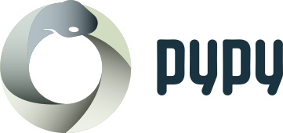
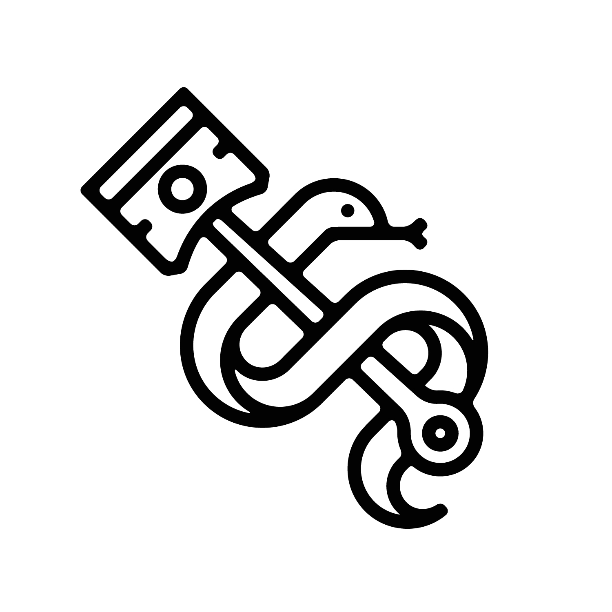
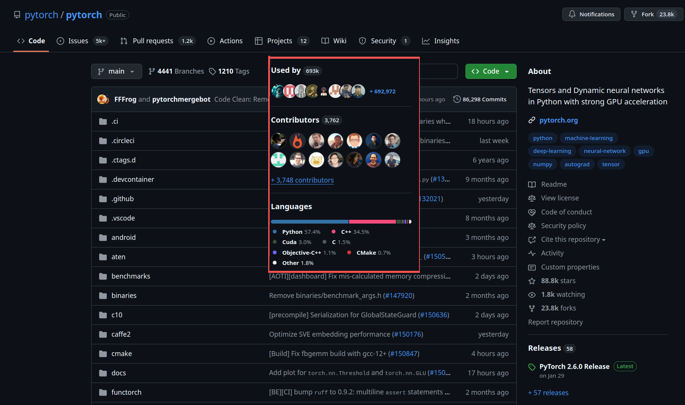
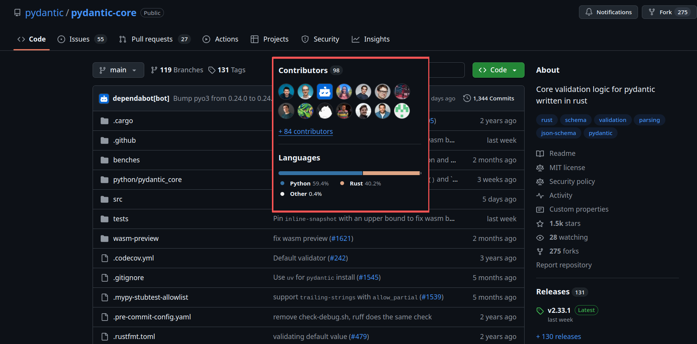
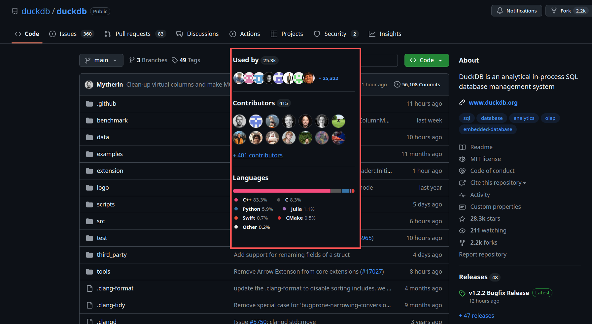
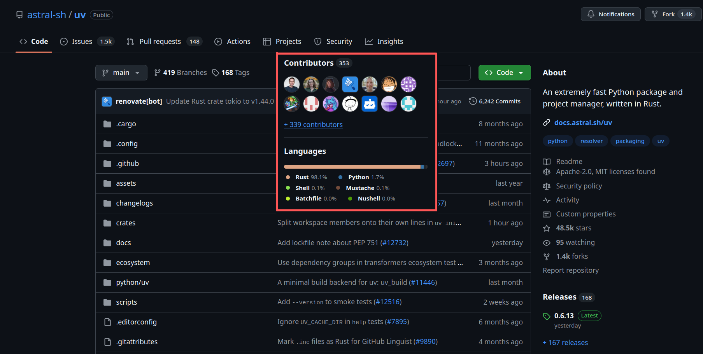
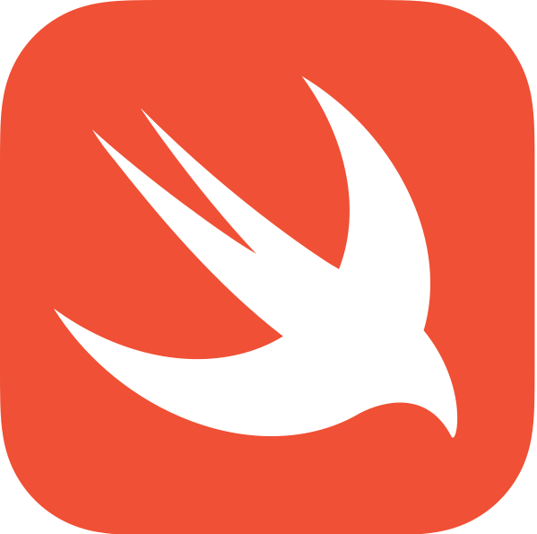
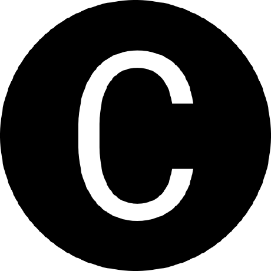

Python es genial
(No hay necesidad de mostrar encuestas)
...pero, ¿cuál?


...pero, ¿por qué?
Mejor... demos
un paso atrás
La inspiración de Python
HOW TO RETURN words document:
PUT {} IN collection
FOR line IN document:
FOR word IN split line:
IF word not.in collection:
INSERT word IN collection
RETURN collection
Lenguaje de programación ABC
Componentes clave
- Interoperabilidad entre lenguajes
- Evolución del lenguaje
En este escenario
Algunos lenguajes eran mejores que otros
El lenguaje de programación C (Ritchie & Thompson)
- Compilador de Fortran*, BCPL+SMALGOL -> B
- Assembly, NB (
char, char*, int*)-> C
CPython
(Rumores dicen que la C es de Canónico, no de C)
¿Por qué eso es una
buena noticia?
C puede "hablar" con muchos otros lenguajes
Y esa es la clave del éxito




El enfoque básico:
extensiones en C
Extensión de Python con C
// pycones2026.c
#include <Python.h>
static PyObject* hello(PyObject* self, PyObject* args) {
char *msg = "Hello PyCon ES 2026!";
return Py_BuildValue("s", msg);
}
static PyMethodDef functions[] = {
{"hello", (PyCFunction)hello, METH_NOARGS, NULL},
{NULL, NULL, 0, NULL}
};
static struct PyModuleDef module = {
PyModuleDef_HEAD_INIT,
"pycones2026", // nombre del módulo
NULL, // documentación
-1, // estado por intérprete
functions
};
PyMODINIT_FUNC PyInit_pycones2026(void) {
return PyModule_Create(&module);
}
# pyproject.toml
[build-system]
requires = ["setuptools>=74.1"]
build-backend = "setuptools.build_meta"
[project]
name = "pycones2026"
version = "0.1.0"
[tool.setuptools]
ext-modules = [
{name = "pycones2026", sources = ["pycones2026.c"]}
]
$ pip install .
$ python
>>> from pycones2026 import hello
>>> print(hello())
Hello PyCon ES 2026!
¿Demasiado complicado?
😵💫
Python y C
# Un comentario
import my_module
def add(a: int, b: float) -> float:
return a + b
def main():
msg: str = "Hello World"
x: int = 3
y: float = 0.14
z: float = add(x, y)
print("%f" % z)
if __name__ == "__main__":
main()
// Un comentario
#include <my_module.h>
float add(int a, float b) {
return a + b;
}
int main(){
char msg[] = "Hello World";
int x = 3;
float y = 0.14;
float z = add(x, y);
printf("%f", z)
return 0;
}
Entonces, ¿por qué seguimos usando C?
¿cuáles son nuestras opciones?
Swift

func add(_ a: Int, _ b: Int) -> Int {
return a + b
}
print(add(2, 3)) // 5
- 2014
- Obj-C ('89) -> Swift
- Sintaxis más corta/mejor
- Seguridad de memoria (refcount automático)
- Inferencia de tipos
- ¡Tiene REPL!
- Encadenamiento opcional
let name = person.address?.city
- POO
Lo que Python puede aprender: Optionals explícitos: menos errores con None
Erlang
-module(calc).
-export([add/2]).
add(A, B) -> A + B.
%% 1> calc:add(2, 3).
%% 5
- 1986
- Funcional y tolerante a fallos
- ¿Alguien dijo industria de telecomunicaciones?
- Prolog -> BEAM
- Aislamiento de procesos
- Modelo de concurrencia
- Cero tiempo de inactividad al actualizar código
- VM BEAM (Elixir y Gleam)
Lo que Python puede aprender: aislamiento de procesos, la base de ideas como los subintérpretes
Gleam
import gleam/int
import gleam/io
pub fn add(a: Int, b: Int) -> Int {
a + b
}
pub fn main() {
io.println(int.to_string(add(2, 3)))
}
- Tipado estático, sintaxis simple
- Corre sobre la BEAM (Erlang) y también compila a JavaScript
- Hereda concurrencia y tolerancia a fallos de Erlang
Lo que Python puede aprender: tipado estático amigable y manejo explícito de errores (Result)
Julia
function add(a::Int, b::Int)::Int
return a + b
end
println(add(2, 3)) # 5
- 2012
- Velocidad de C, sensación de R/Python/Matlab
- JIT (PEP 836 😭)
- Sistema de tipos paramétricos flexible
- Funciones con despacho múltiple
- Sin POO (tipos compuestos mediante structs)
Lo que Python puede aprender: despacho múltiple y un JIT pensado para computación científica
Zig
- Sin flujo de control ni reserva de memoria ocultos
- Sin preprocesador, sin macros
- Metaprogramación: ejecución de código en tiempo de compilación y evaluación perezosa (
comptime) - ¡Tests, tests, tests!
// main.zig
const std = @import("std");
pub fn main() !void {
const stdout = std.io.getStdOut().writer();
try stdout.print("Hello, {s}!\n", .{"world"});
}
$ zig build-exe main.zig
$ ./hello
Hello, world!
Zig - Aspectos destacados (1/3)
Integración con bibliotecas de C sin FFI/bindings
const c = @cImport({
// See https://github.com/ziglang/zig/issues/515
@cDefine("_NO_CRT_STDIO_INLINE", "1");
@cInclude("stdio.h");
});
pub fn main() void {
_ = c.printf("hello\n");
}
Zig - Aspectos destacados (2/3)
comptime y test
fn max(comptime T: type, a: T, b: T) T {
return if (a > b) a else b;
}
fn gimmeTheBiggerFloat(a: f32, b: f32) f32 {
return max(f32, a, b);
}
fn gimmeTheBiggerInteger(a: u64, b: u64) u64 {
return max(u64, a, b);
}
// literal de arreglo
const m = [_]u8{ 'h', 'e', 'l', 'l', 'o' };
// obtener el tamaño de un arreglo
comptime {
assert(m.len == 5);
}
const std = @import("std");
const expect = std.testing.expect;
test {
const a = {};
const b = void{};
try expect(@TypeOf(a) == void);
try expect(@TypeOf(b) == void);
try expect(a == b);
}
Zig - Aspectos destacados (3/3)
Compilación cruzada
$ zig build-exe src/main.zig -target x86_64-windows-gnu
$ file main.exe
main.exe: PE32+ executable (console) x86-64, for MS Windows, 7 sections
$ zig build-exe src/main.zig -target aarch64-linux-musl
$ file main
main: ELF 64-bit LSB executable, ARM aarch64, version 1 (SYSV), statically linked, with debug_info, not stripped
Lo que Python puede aprender: compilación cruzada sencilla, ideal para construir wheels de varias plataformas
PyOZ (Zig)
const pyoz = @import("PyOZ");
fn add(a: i64, b: i64) i64 {
return a + b;
}
pub const Module = pyoz.module(.{
.name = "mymodule",
.funcs = &.{
pyoz.func("add", add, "Suma dos números"),
},
});
$ pip install pyoz
$ pyoz init myproject && cd myproject
$ pyoz develop
Nota: Ziggy PyDust está un poco estancado
No solo Python está aprendiendo de otros lenguajes
Qt Bridges
- Framework de C++
- No son bindings 1:1
- Integrado con Swift, Java/Kotlin, Python, C# y Rust
- Más lenguajes para el futuro de Qt
- qt.io/qt-bridges
¡Pero no has mencionado Rust!
Rust
- Rendimiento
- Rápido y eficiente en memoria (sin runtime ni GC).
- Fiabilidad
- Sistema de tipos rico y modelo de ownership (seguridad de memoria e hilos).
- Productividad
- Documentación, compilador amigable, gestor de paquetes y herramienta de build.
fn main() {
println!("Hello, world!");
}
$ rustc main.rs
$ ./main
Hello, world!
¿Por qué lo estamos adoptando?
Extensión de Python con Rust (PyO3)
use pyo3::prelude::*;
/// Formatea la suma de dos números como string.
#[pyfunction]
fn hello(s: &str) -> PyResult {
let msg = format!("Lo siento, no lo siento {s}!");
Ok(msg)
}
/// Un módulo de Python implementado en Rust.
#[pymodule]
fn pycones2026(_py: Python, m: &PyModule) -> PyResult<()> {
m.add_function(wrap_pyfunction!(hello, m)?)?;
Ok(())
}
Seguridad de memoria/hilos en Rust
#include <stdio.h>
#include <stdint.h>
int main(int argc, char *argv[]) {
uint32_t array[5] = {0, 0, 0, 0, 0};
for (int idx = 0; idx < 7; idx++) {
printf("%d: %d\n", idx, array[idx]);
}
return 0;
}
0: 0
1: 0
2: 0
3: 0
4: 0
5: 0
6: -812787712
fn main() {
let array: [u32; 5] = [0;5];
for index in 0..array.len() + 2 {
println!("{}: {}", index, array[index])
}
}
0: 0
1: 0
2: 0
3: 0
4: 0
thread 'main' panicked at overflow.rs:4:35:
index out of bounds: the len is 5 but the index
is 5
note: run with `RUST_BACKTRACE=1` environment
variable to display a backtrace
Herramientas de Rust
➜ project cargo init
Creating binary (application) package
note: see more `Cargo.toml` keys and their definitions at
https://doc.rust-lang.org/cargo/reference/manifest.html
➜ project tree
.
├── Cargo.toml
└── src
└── main.rs
2 directories, 2 files
➜ project cargo build
Compiling project v0.1.0 (/tmp/project)
Finished `dev` profile [unoptimized + debuginfo] target(s) in 0.21s
➜ project cargo run
Finished `dev` profile [unoptimized + debuginfo] target(s) in 0.00s
Running `target/debug/project`
Hello, world!
Rust en el ecosistema de Python
Herramientas escritas en Rust
- uv y ruff
- pydantic-core
- polars
- cryptography
Por qué funcionó
- PyO3 + maturin: de cero a wheel en minutos
- cargo: dependencias y builds reproducibles
- Seguridad de memoria sin recolector de basura
Rust en PyPI
6+
de los 100 paquetes más descargados usan Rust
~33%
del código nativo nuevo en PyPI es Rust
27% → 33%
de autores de extensiones que eligen Rust, en un año
top-pypi-packages (30 días hasta 2026-10-01); David Hewitt, Python Language Summit 2025; JetBrains, State of Python 2025
Probablemente ya usas Rust sin saberlo
rpds-py: 470M de descargas en 30 días, dependencia dejsonschemajiter: 317M, lo usanopenaiyanthropictokenizers: 167M, lo usatransformers- Una dependencia transitiva que nadie eligió
pypistats.org, octubre 2026
Rust ya está en muchos otros lugares
Herramientas, sistemas centrales, toolchain, kernel
Incluso los gobiernos lo saben
(2022 - 2024) NSA, CISA, Casa Blanca: hojas de ruta hacia lenguajes con memoria segura, con Rust entre las alternativas
(2026 - 2027) Ley de Ciberresiliencia de la UE (CRA): recae sobre las empresas que distribuyen Python, C++ y Rust
Rust es rápido
pero... ¿es realmente la mejor opción?
Aplicación real
rustglob
Configuración y benchmark
1K directorios, 1M archivos
| No recursivo (s) | Recursivo (s) | Mejora | |
glob |
0.00208 | 5.65685 | - |
Path.glob |
2.66983 | 2.93025 | 48.7% |
Rust glob (PyO3) |
0.00088 | 0.88313 | 84.7%🎉 |
C++ glob |
0.00063 | 0.58559 | 89.7%🫣 |
"Pfff... seguro que
optimizaste la implementación de C++"
¡Eso es injusto!
es el overhead de PyO3
Configuración y benchmark
1K directorios, 1M archivos
| No recursivo (s) | Recursivo (s) | Mejora | |
glob |
0.00208 | 5.65685 | - |
Path.glob |
2.66983 | 2.93025 | 48.7% |
Rust glob (PyO3) |
0.00088 | 0.88313 | 84.5% |
C++ glob |
0.00063 | 0.58559 | 89.7% |
C++ nanobind |
0.00053 | 0.59322 | 89.5% |
Si C++ es más rápido,
¿por qué no lo usamos? 🤔
C++ moderno: C++20
// declaración de módulo
export module simple;
export string hello() {
return "¡Ayúdame por favor!";
}
// uso del módulo
import simple;
int main() {
cout << hello();
}
// rangos
vector ints{0,1,2,3,4,5};
auto even = [](int i){ return 0 == i % 2; };
auto square = [](int i) { return i * i; };
for (int i : ints | views::filter(even) | views::transform(square)) {
cout << i << ' ';
}
Lo que Python puede aprender: módulos y rangos: modernizar un lenguaje sin romper el código existente
C++ moderno: C++23
// manejo de errores sin excepciones
using std;
expected<int, string> parse(string_view s);
auto doble = parse("21").transform(
[](int x) { return x * 2; });
import std; // adiós #include
std::println("Resultado: {}", doble.value_or(-1));
// subíndice multidimensional
std::mdspan m(datos, 3, 4);
m[1, 2] = 42; // en vez de m[1][2]
// "deducing this"
struct Contador {
int n = 0;
auto&& get(this auto&& self) { return self.n; }
};
Lo que Python puede aprender: resultados explícitos (expected) en vez de solo excepciones
C++ moderno: C++26
Técnicamente completo en marzo de 2026; publicación esperada a fines de 2026
// reflexión: C++ se inspecciona en compilación
// Color(valor).name in Python
template <typename E>
constexpr std::string_view a_texto(E valor) {
template for (constexpr auto e :
std::define_static_array(
std::meta::enumerators_of(^^E))) {
if (valor == [:e:])
return std::meta::identifier_of(e);
}
return "<desconocido>";
}
// contratos
double mi_sqrt(double x)
pre(x >= 0.0)
post(r : r >= 0.0)
{ return std::sqrt(x); }
// leer una variable sin inicializar
int f() {
int x;
return x; // comportamiento erróneo, ya no es UB
}
int y [[indeterminate]]; // opt-out explícito
Lo que Python puede aprender: la seguridad se logra por defecto y con opt-out explícito, no con reglas aparte
C++ moderno: C++29 y después
- Pattern matching (Python lo tiene desde 3.10)
- Trivial relocatability
- Enforcement de contratos y colas concurrentes
- Redes sobre
std::execution(async con senders y receivers) - Profiles: fuera de C++26, siguen en discusión
Lo que Python puede aprender: C++ avanza adoptando ideas de otros lenguajes, igual que Python
No me digan que C++ no se preocupa por la seguridad
C++ lleva mucho tiempo
trabajando en seguridad
- 1998–2008
- RAII,
auto_ptr; reglas JSF++ (2005) y MISRA C++ (2008) - 2011–14
- "C++ moderno": smart pointers, move semantics
- 2012
- Sanitizers: AddressSanitizer en Clang y GCC
- 2015
- Core Guidelines, GSL, Lifetime Profile (nunca se entregó)
- 2024–26
- libc++ reforzada, biblioteca estándar reforzada en C++26
La respuesta de C++, 1/2: Profiles
// sintaxis propuesta (P3081 / P3589), todavía en discusión
[[profiles::enforce(bounds_safety)]];
[[profiles::enforce(type_safety)]];
void fill(std::span<int> s, int* raw) {
s[10] = 0; // verificado en runtime
raw[1] = 0; // rechazado: índice sobre puntero crudo
[[profiles::suppress(bounds_safety)]]
raw[1] = 0; // excepción explícita y fácil de buscar
}
El mismo C++, con reglas más estrictas
- Stroustrup y Sutter
- Subconjuntos opt-in: límites, tipos, lifetimes
- Sin sintaxis ni biblioteca estándar nuevas
- Es la dirección del comité, pero no entra en C++26
- C++26 trae en cambio una biblioteca estándar reforzada
Lo que Python puede aprender: reglas más estrictas que se activan poco a poco, como los type hints
La respuesta de C++, 2/2: Safe C++ / Circle
#feature on safety
#include <std2.h>
int main() safe {
std2::vector<int> vec { 11, 15, 20 };
for(int x : vec) {
// error: modificar vec invalida
// el iterador del for
if(x % 2)
mut vec.push_back(x);
}
}
Un borrow checker, en C++
- Sean Baxter (P3390, 2024)
- Borrow checker real y funciones
safe - Una segunda biblioteca estándar (
std2) - Abandonado en junio de 2025: ganó Profiles
Lo más cercano al modelo de Rust... demasiado lejos de C++ 🫤
Lo que Python puede aprender: una migración que exige reescribirlo todo rara vez gana
¿Tiene C++
un sucesor?

Carbon
- En desarrollo
- Enfoque de sucesor
- Interoperabilidad (C++ ⇄ Carbon)
- Sistema genérico moderno
- Estrategia de seguridad (plan de migración)
package hello api;
fn Main() -> i32 {
var s: auto = "Hello, world!";
Print(s);
return 0;
}
$ ./explorer hello.carbon
Hello, world!
Carbon - Aspectos destacados
- Google, 2022: un sucesor, no un dialecto
- La interoperabilidad con C++ es el objetivo central
- Chequeos de memoria y data races en compilación, sin
&mutexclusivo - Plan: modo permisivo → modo estricto
- Aún experimental
Lo que Python puede aprender: migración gradual con interoperabilidad, justo lo que busca Rust en CPython
Volviendo a Rust: si es tan bueno
¿por qué no una reescritura completa?
Rust para CPython (1/2)
Propuesta de David Hewitt, Emma Smith y Kirill Podoprigora (Language Summit 2026)
- 3.16 (oct 2027) - backend opcional en Rust para zlib, con C como alternativa
- 3.17 (oct 2028) - más áreas: io, json, xml, memoryview, parser
- 2029+ - Rust obligatorio para compilar CPython
Rust para CPython (2/2)
Criterios de éxito
- La mayoría de los core devs está abierta a usar la API de Rust
- Sin lentitud en los benchmarks de CPython
- Rust soporta todas las plataformas con tier
Preocupaciones
- Portabilidad entre plataformas
- No todos conocen Rust
- Dependencias de Cargo (zlib-rs)
- Rust no elimina todos los bugs
Si vamos a reescribir...
¿por qué no repensar todo?
mojo 🔥 (1/2)
Front-end con sabor a Python sobre un poderoso backend de LLVM para generar código nativo
mojo 🔥 (2/2)
- Lenguaje específico de dominio embebido (eDSL)
- Lenguaje de sistemas para programación de GPU
- Tipos dependientes
- MLIR: Representación Intermedia Multinivel
from python import Python
def main():
print("¡Hola Mojo 🔥!")
var name: String = input("¿Quién eres? ")
var greeting: String = "Hola, " + name + "!"
print(greeting)
for x in range(9, 0, -3):
print(x)
var _t = Python.import_module(
"simple_interop"
)
_t.test_interop_func()
Lo que Python puede aprender: la sintaxis de Python para programar GPUs y aceleradores
Una extensión, muchos lenguajes
| C | API de C de CPython |
| C++ | nanobind (ABI estable desde Python 3.12) |
| Rust | PyO3 |
| Zig | PyOZ, py.zig |
| Mojo | Importa módulos de Python y Python llama a Mojo |
¿Pero esto sigue siendo Python?
¿Cuál es nuestro objetivo?
¿Hacer Python más rápido?
¿O movernos a un nuevo lenguaje?
Últimas optimizaciones de Python
- 3.11 - Intérprete adaptativo especializante
- 3.12 - Generador de intérprete con análisis y modificación del DSL
- 3.13 - Más optimización del intérprete de micro-ops (ejecución de código "caliente").
- 3.14 - Intérprete con tail calls y el nuevo JIT.
- PEP 836 - Hoja de ruta para un JIT soportado: retirado (oct 2026)
Concurrencia en Python
- PEP 703 - build free-threaded (opcional)
- PEP 779 - soportado oficialmente desde 3.14
- El GIL sigue siendo el predeterminado; sin versión comprometida para cambiarlo
- PEP 734 - múltiples intérpretes (
concurrent.interpreters) desde 3.14 - Las extensiones en C necesitan recompilarse (
cp314t) y ser seguras para hilos